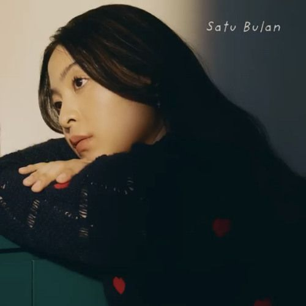
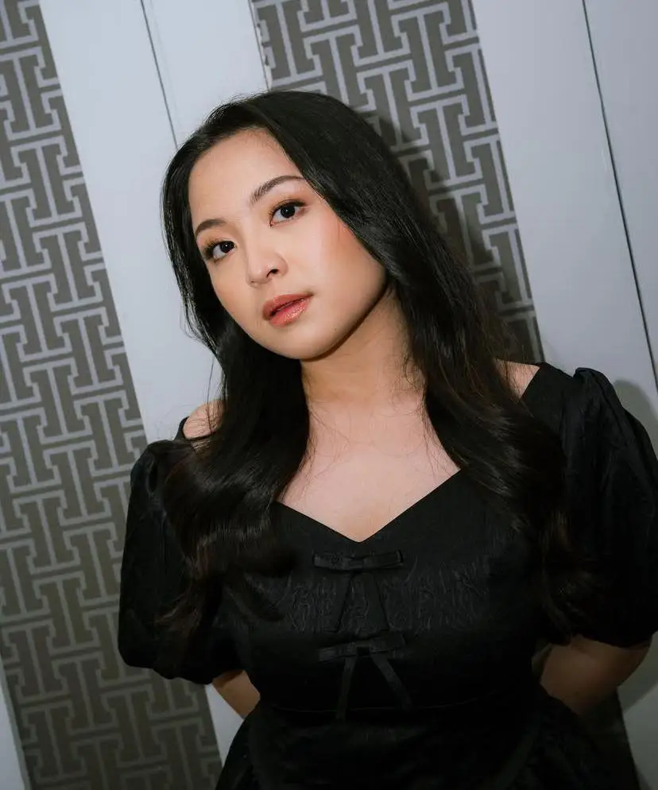

Bernadya adalah seorang penyanyi Indonesia yang dikenal dengan gaya vokalnya yang bernada dan lirik-lirik yang menyoroti kehidupan sehari-hari. Ia memulai karirnya dalam dunia musik dengan merilis single pertamanya "Kau Yang Terbaik" pada tahun 2016. Lagu-lagu Bernadya kemudian menjadi populer di kalangan penggemar musik Indonesia, dengan ciri khas suara bernada yang unik dan emosional.
Bernadya juga aktif dalam berbagai proyek musik, termasuk kolaborasi dengan artis lainnya. Ia telah merilis beberapa album, seperti "Kau Yang Terbaik" dan "Percayalah". Dalam album-albumnya, Bernadya mengeksplorasi berbagai genre musik, mulai dari pop, R&B, hingga soul. Selain itu, Bernadya juga aktif dalam berbagai proyek lainnya, seperti penulisan lirik dan penampilan di acara-acara musik Indonesia. Dengan gaya vokal yang menawan dan lirik yang menyoroti pengalaman pribadi, Bernadya menjadi salah satu artis Indonesia yang patut diperhatikan.
7.9M
Spotify Followers
10M
Monthly Listener
2
Official Full Album